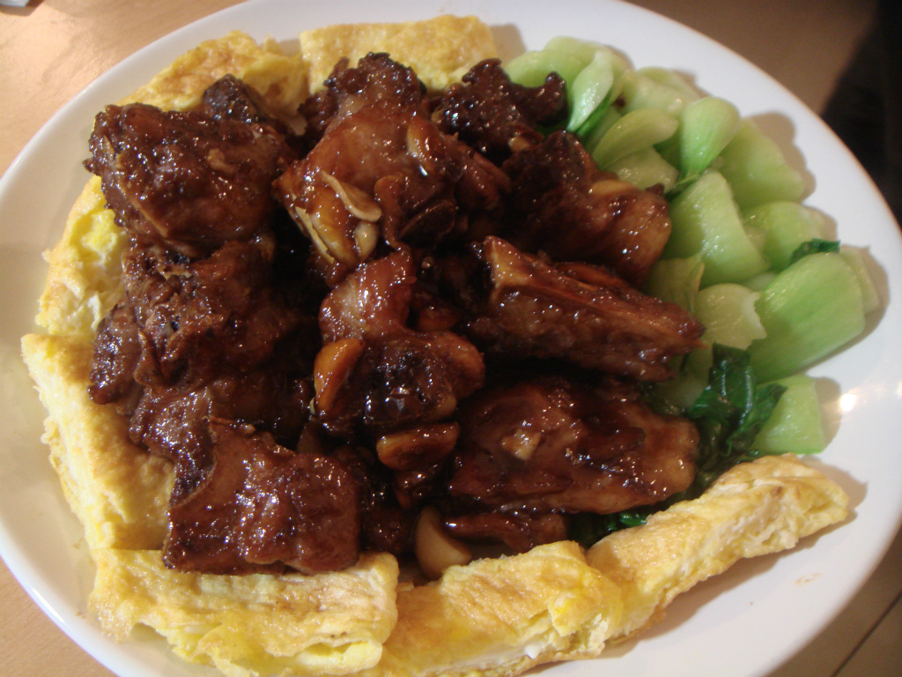

| 圖片 | 標題 | 說明 |
|---|---|---|
糖醋魚 |
青紅椒切丁洋蔥切細 用調好的麵糊去裹魚油溫160度下去炸 調好的醬料下去炒至起泡淋上炸好的魚上。 擺盤即可 |
|
|  | 醬燒排骨 |
食材清洗好備用放一大匙的純米料理米酒入排骨去腥， 再加入1/2大匙的醬油，將排骨按摩一下靜置備用（約二十分鐘） 鍋內放少許油爆香薑片再依續放入蔥、蒜頭炒出香氣， 放入排骨二面都煎上色再嗆入一大匙的米酒提香 接著放入二大匙的糖、三大匙的醬油，再加入水（水的部份要蓋過食材） |
干貝燴三絲 |
玉米筍切菱形，蒜頭切末，薑切片，荷蘭豆，紅蘿菠切絲備用取一滾水將玉米筍 ，紅蘿菠，荷蘭豆川燙至7分熟將白蝦去頭撥殼， 開背去沙筋備用軟絲切花備用干貝解凍備用將軟絲與蝦仁放入滾水中，過水備用 取鍋加入一大匙料理油放入薑片蒜頭爆香在放入干貝略炒30秒 |